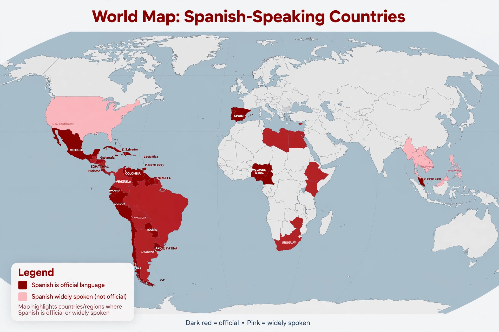

Spanish language

Native to: Spain, Mexico, most of Central and South America
Native speakers: c. 490 million
Language family: Indo-European → Italic → Romance
Writing system: Latin (Spanish alphabet)
Official language in: 20 countries, the UN, the EU
Spanish (español), also known as Castilian (castellano), is a Romance language of the Indo-European family that evolved from Latin spoken on the Iberian Peninsula. Today it is the world's second-most spoken native language after Mandarin Chinese, with roughly 490 million native speakers and some 560 million total speakers. Mexico has the largest population of Spanish speakers, followed by Colombia, Spain and Argentina.
History
Spanish developed from the Vulgar Latin dialects of the Roman province of Hispania. After Rome's collapse, Visigothic and later Arabic influence under Muslim rule (711–1492) left a lasting mark: several thousand Spanish words, such as aceite (oil), ojalá (hopefully) and alcalde (mayor), derive from Arabic. The dialect of Castile spread with the Reconquista and the unification of Spain; in 1492 Antonio de Nebrija published the first grammar of a modern European language, the Gramática de la lengua castellana. Spanish was then carried to the Americas, the Philippines and Equatorial Guinea through colonisation.
Grammar and phonology
Spanish has a subject–verb–object word order, two grammatical genders, and a rich verbal system with around fourteen tenses and three moods, including a fully living subjunctive. Its phonology is relatively simple, with five pure vowels. See Grammar and Phonetics.
Regulation
The language is regulated by the Association of Spanish Language Academies, whose senior member is the Royal Spanish Academy (Real Academia Española), founded in 1713. The academy publishes the Diccionario de la lengua española.
See also
French language · Indo-European languages · Language family · Grammar